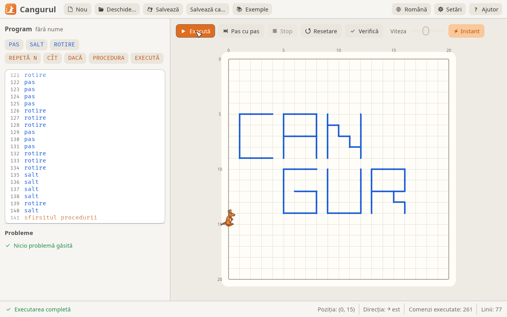
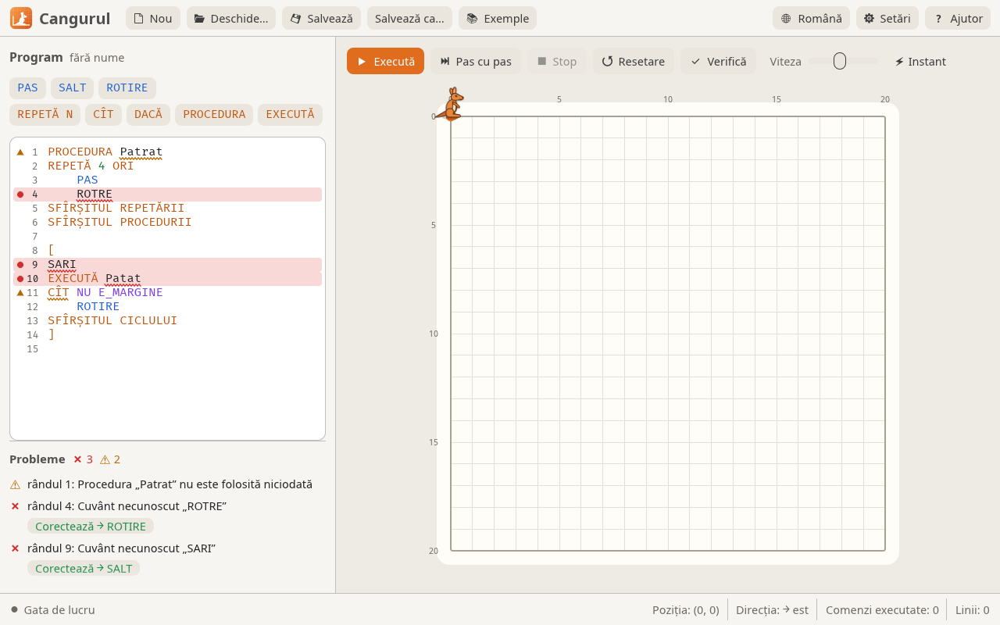

Cangurul
Mediul „Cangurul” pentru învățarea algoritmilor — programul scris cu comenzi simple îl face pe cangur să sară pe câmp și să deseneze linii.
Cangurul stă pe un câmp cu grilă. Elevul scrie un program cu comenzi simple — PAS, SALT, ROTIRE, cicluri, condiții și proceduri — iar cangurul îl execută, desenând linii pe câmp. Din câteva comenzi ies litere, pătrate, spirale și chiar numele cangurului. Cangurul 3 este rescris în Rust după programul „Cangurul” (versiunea 2), iar fișierele .cng vechi se deschid și rulează fără modificări.

Descarcă Cangurul · Site-ul programului · Cod sursă pe GitHub
Descărcare și instalare¶
Pe pagina Releases alege fișierul potrivit:
| Sistem | Fișier |
|---|---|
| Windows 10 / 11, 64 de biți | cangurul-<versiune>-windows-x64.msi (instalator) sau -windows-x64-portable.zip |
| Windows 10 / 11, 32 de biți | cangurul-<versiune>-windows-x86.msi sau -windows-x86-portable.zip |
| Windows 7 și 8 (32 și 64 de biți) | cangurul-<versiune>-windows7-x86-portable.zip |
| macOS (Apple Silicon și Intel) | cangurul-<versiune>-macos-universal.dmg |
| Ubuntu / Debian / Mint | cangurul-<versiune>-linux-x86_64.deb |
| Orice Linux | cangurul-<versiune>-linux-x86_64.AppImage |
- Windows: instalatorul
.msipune Cangurul în meniul Start, iar fișierele.cngse deschid cu dublu-click. Varianta.zipnu cere instalare: dezarhivezi și porneștiCangurul.exe. - macOS: deschide
.dmg-ul și trageCangurul.apppeste Applications. Aplicația nu e semnată cu un certificat Apple, așa că la prima pornire: click dreapta → Deschide (pe macOS 15+: Setări de sistem → Confidențialitate și securitate → Deschide oricum). - Linux:
sudo apt install ./cangurul-*.debsauchmod +x cangurul-*.AppImage && ./cangurul-*.AppImage.
Un laborator întreg
Instalatorul se poate rula fără ferestre: msiexec /i cangurul-*.msi /qn. Cu INSTALLFOLDER="D:\Cangurul" alegi alt dosar, iar cu DESKTOPSHORTCUT="" nu se pune scurtătură pe desktop.
Limbajul¶
| Comandă | Ce face |
|---|---|
PAS |
un pas înainte, lăsând urmă |
SALT |
un pas înainte, fără urmă |
ROTIRE |
rotire cu 90° în sensul acelor ceasornicului |
REPETĂ N ORI … SFÎRȘITUL REPETĂRII |
repetă de N ori |
CÎT [NU] condiție … SFÎRȘITUL CICLULUI |
repetă cât timp condiția e adevărată |
DACĂ [NU] condiție comandă1 ALTFEL comandă2 |
ramificare (ALTFEL poate lipsi) |
PROCEDURA Nume … SFÎRȘITUL PROCEDURII |
definește o procedură (înainte de programul principal) |
EXECUTĂ Nume |
apelează procedura |
[ … ] |
programul principal |
// … și * … * |
comentarii |
Condiții: E_MARGINE (cangurul stă cu fața spre marginea câmpului) și E_LINIE (în fața lui este deja o linie sau marginea). Cangurul pornește din colțul din stânga-sus și privește spre dreapta.
Primul program: un pătrat¶
Patru laturi de câte 5 pași, cu o rotire după fiecare:
// Un pătrat cu latura de 5 pași
[
repetă 4 ori
repetă 5 ori
pas
sfîrșitul repetării
rotire
sfîrșitul repetării
]
Cicluri cu condiție: spirala¶
Exemplul original „Spirala”: cangurul merge înainte până dă de o linie (sau de margine), apoi se rotește. Pentru că fiecare tur se oprește în fața liniei de pe turul anterior, desenul se strânge spre centru.
// Acest program prezintă
// modul de a desena o
// Spirala
[
cit nu e_linie
cit nu e_linie
pas
sfirsitul ciclului
rotire
sfirsitul ciclului
]
Cuvintele-cheie în trei limbi¶
Se pot scrie în oricare dintre limbi, cu sau fără diacritice, cu litere mari sau mici.
| Română | English | Русский |
|---|---|---|
PAS SALT ROTIRE |
STEP JUMP ROTATE |
ШАГ ПРЫЖОК ПОВОРОТ |
REPETĂ ORI |
REPEAT TIMES |
ПОВТОРИ РАЗ |
CÎT |
WHILE |
ПОКА |
DACĂ ATUNCI ALTFEL |
IF THEN ELSE |
ЕСЛИ ТОГДА ИНАЧЕ |
NU |
NOT |
НЕ |
PROCEDURA EXECUTĂ |
PROCEDURE EXECUTE |
ПРОЦЕДУРА ВЫПОЛНИТЬ |
SFÎRȘITUL REPETĂRII / CICLULUI / PROCEDURII |
END REPEAT / CYCLE / PROCEDURE |
КОНЕЦ ПОВТОРА / ЦИКЛА / ПРОЦЕДУРЫ |
E_MARGINE E_LINIE |
IS_BORDER IS_LINE |
КРАЙ ЛИНИЯ |
Analizorul de cod¶

Programul este verificat la fiecare modificare, iar analizorul găsește toate greșelile, nu doar prima:
- cuvintele greșite sunt subliniate ondulat (roșu = eroare, galben = avertisment); la hover apare explicația;
- lista Probleme de sub editor arată toate erorile, iar un click duce cursorul la cuvântul respectiv;
- pentru cuvinte scrise greșit se propune corectura („Poate ați vrut SALT?”), aplicabilă cu butonul Corectează;
- programul cu erori nu pornește; avertismentele (proceduri nefolosite, blocuri goale, cicluri
CÎTcare nu mută cangurul) nu blochează rularea.
Taste rapide¶
| Tastă | Acțiune |
|---|---|
| F5 | execută / pauză |
| F6 | pas cu pas |
| Esc | stop |
| F7 | verifică |
| Ctrl+Shift+F | formatează programul |
| Ctrl+N / Ctrl+O / Ctrl+S | nou / deschide / salvează |
Ce e nou față de versiunea originală¶
| Interfață | temă luminoasă și întunecată; interfața în română, rusă și engleză |
| Editor | numerotarea rândurilor, evidențierea sintaxei, butoane care inserează comenzile, indentare automată |
| Execuție | animație fluidă, rândul curent evidențiat; pas cu pas, pauză, viteză reglabilă sau instant |
| Câmpul | dimensiune reglabilă (implicit 20 × 20); salturile pot fi afișate punctat |
| Fișiere | programul și setările se păstrează între porniri; deschidere prin drag & drop |